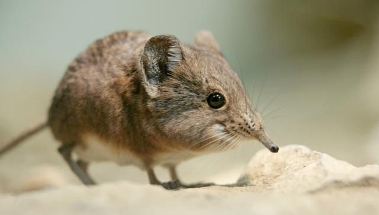
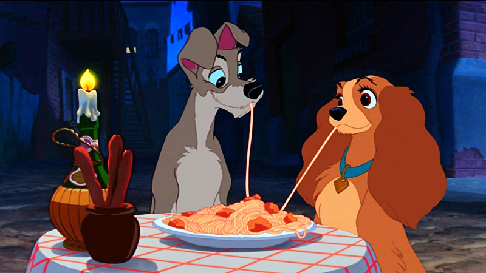
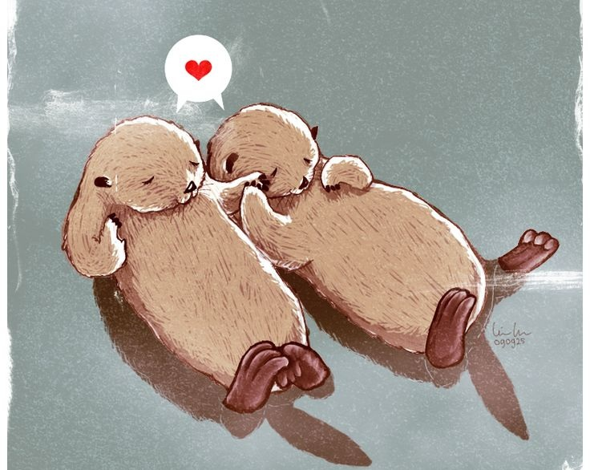
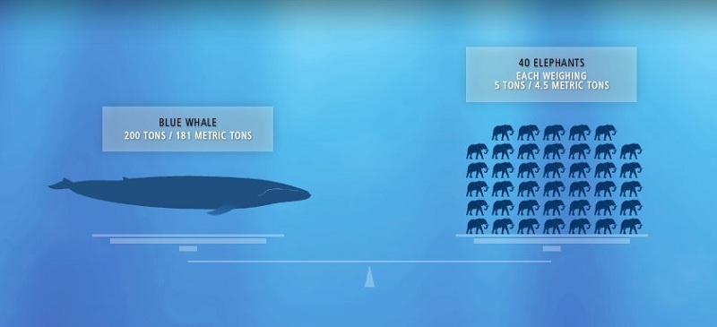

1. The closest relatives to the elephant shrew are actually elephants, not shrews. 
© BBC Wildlife
2. When playing with female puppies, male puppies will often let them win, even if they have a physical advantage. 
©Lady and the Tramp (1995)
3. Sea otters hold hands when they sleep to keep from drifting apart. 
4. Did you know that cows have four stomaches?
5. The blue whale weights as much as 40 elephants and is as long as greyhound buses. 
6. Most elephats weigh less than the tongue of a blue whale.
7. Pandas don't have particular sleeping spots; they simply fall asleep whenever they happen to be.
8.The tiger is the biggest species of the cat family.
9. A male penguin offers a pebble to a female penguin. If she takes it, they become partners. Some penguins don't build nests, instead they carry their eggs on thier feet.
©Observation of Animal Behaviour
10. Octupuses have three hearts